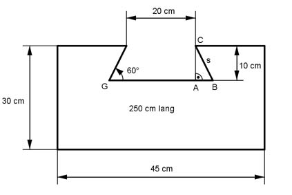

Aufgabe 159 In eine Stahlplatte 45 cm x 30 cm x 250 cm wird der Länge nach eine Schwalbenschwanzführung eingefräst. Sie hat die Form eines gleichseitigen Trapezes mit der kürzeren parallelen Seite von 20 cm, einer Neigung der Schenkel zur Grundseite von 60° und einer Höhe von 10 cm. Welches Volumen V hat die Platte und welche Oberfläche O?  Volumen der Platte ohne Führung: VPlatte = 30 cm * 45 cm * 250 cm = 337 500 cm³ = 337,5 dm³ Volumen der Führung: Im Dreieck ABC gilt: 10 cm sin 60° = --------- |*s s sin 60° * s = 10 cm |:sin 60° 10 cm 10 cm s = --------- = -------- = 11,55 cm sin 60° 0,866 10 cm tan 60° = -------- |*AB AB AB * tan 60° = 10 cm |:tan 60° 10 cm 10 cm AB = --------- = -------- = 5,77 cm tan 60° 1,732 GB = 20 cm * 2 * AB = 20 cm + 2 * 5,77 cm = 31,54 cm 20 cm + 31,54 cm VFührung = ------------------- * 10 cm * 250 cm= 64 425 cm³ = 2 = 64,425 dm³ V = VPlatte - VFührung = 337,5 dm³ - 64,425 dm³ = 273,1 dm³ Oberfläche = 2 * Grundfläche G + Gesamtumfang U * 250 cm U = 45 cm + 2 * 30 cm + (45 cm - 20 cm) + 2 * 11,55 cm + 31,54 cm U = 184,64 cm 20 cm + 31,54 cm G = 45 cm * 30 cm - ------------------ * 10 cm = 2 G = 1 350 cm² - 257,7 cm² = 1 092,3 cm² O = 2 * 1 092,3 cm² + 184,64 cm * 250 cm O = 2 184,6 cm² + 46 160 cm² = 48 344 cm² = 483,4 dm²